파수는 에너지와 진동수에 정비례하므로 IR에서는 파장 대신 파수(cm⁻¹)를 쓴다. 예: 2.5 μm는 4000 cm⁻¹.
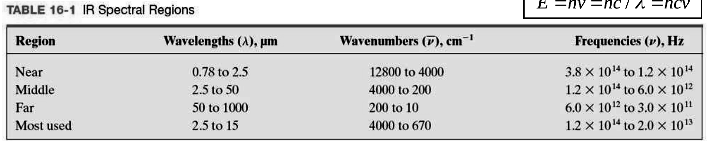
Table 16-1 근적외(NIR) 12,800~4000, 중적외(MIR) 4000~200, 원적외(FIR) 200~10 cm⁻¹. 가장 많이 쓰는 범위는 4000~670 cm⁻¹(2.5~15 μm).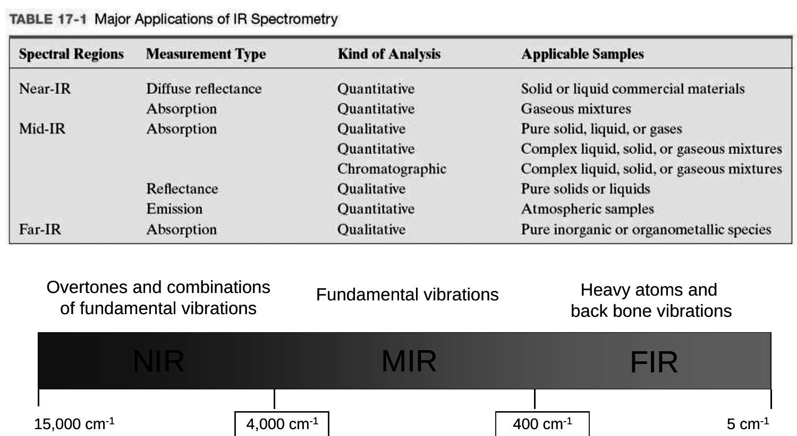
p.33 NIR은 기본 진동의 배음(overtone)과 결합음(combination), MIR은 기본 진동(fundamental), FIR은 무거운 원자와 골격(backbone) 진동. Table 17-1 영역별 측정 형식과 용도.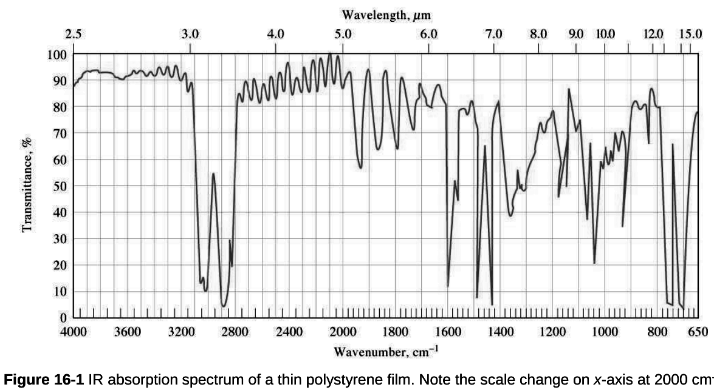
Fig 16-1 얇은 폴리스타이렌 필름 IR 스펙트럼. 세로축은 %T라 흡수 봉우리가 아래로 향한다. 2000 cm⁻¹에서 가로축 눈금이 바뀐다.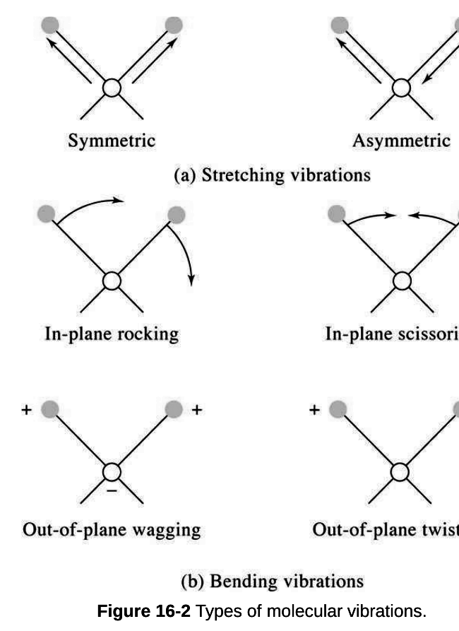
Fig 16-2 (a) 신축 (b) 굽힘. +, −는 지면 앞뒤 움직임.[보충] 굽힘은 신축보다 힘상수가 작아 더 낮은 파수에서 나타난다. 예: H₂O 신축 3650·3760 cm⁻¹, 가위 굽힘 1595 cm⁻¹.
이원자 분자의 신축 진동을 용수철로 연결된 두 질량으로 본다.
k 힘상수(force constant, 결합의 단단함), y 평형에서 벗어난 거리. 위치에너지는 포물선이다.
v 진동 양자수(0, 1, 2, …). 바닥 상태 E₀ = ½hνm(영점 에너지), 첫 들뜬 상태 E₁ = 3/2 hνm. 전이 에너지 ΔE = hνm이므로 흡수하는 빛의 진동수는 역학적 진동수 νm과 같다. 조화 진동자의 선택 규칙은 Δv = ±1이다.
ν̄ 파수(cm⁻¹), k 힘상수(g/s² = dyn/cm 단위로 대입), μ 환산질량(g/원자 = 원자량을 6.02×10²³으로 나눔). 상수 5.3×10⁻¹² = 1/(2πc), c = 3×10¹⁰ cm/s.
힘상수: 단일결합 3×10²~8×10² N/m(평균 5×10² N/m), 이중결합 10×10² N/m, 삼중결합 15×10² N/m. 1 N/m = 1000 g/s².
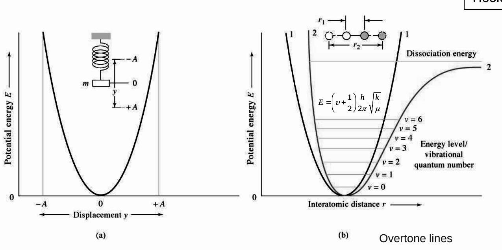
Fig 16-3 (a) 조화 진동자의 포물선 위치에너지 (b) 곡선 1 조화, 곡선 2 비조화(anharmonic). 실제 분자는 비조화라 준위 간격이 위로 갈수록 좁아지고, 큰 거리에서 해리 에너지에 수렴한다. 그래서 Δv = ±2, ±3 전이(배음, overtone)도 약하게 생긴다.예: C=C 신축(슬라이드 예제)
계산 1682 cm⁻¹, 실측 1650 cm⁻¹. k = 10×10² N/m = 10×10⁵ g/s². 실측값이 약간 낮은 것은 실제 결합이 비조화이고 주변 결합과 짝지어 있기 때문이다.
ν̄가 √(k/μ)에 비례하기 때문이다. 결합이 단단하면 빨리 진동하고, 매달린 질량이 무거우면 느리게 진동한다. 같은 k에서 H를 D로 바꾸면 μ가 약 2배가 되어 파수가 약 1/√2배(3000 → 약 2200)로 준다.
[보충] 같은 식, 같은 k(단일 5, 이중 10, 삼중 15 ×10² N/m)로 직접 검산한 계산값이다. 괄호는 Table 17-3·교재의 실측 범위다.
| 결합 | μ (원자량 단위) | 계산 ν̄ (cm⁻¹) |
|---|---|---|
| N−H | 14·1/15 = 0.933 | 약 3010 (실측 3300~3500) |
| C−H | 12·1/13 = 0.923 | 약 3030 (2850~2970) |
| C=O | 12·16/28 = 6.86 | 약 1570 (1690~1760) |
| C=C | 6.00 | 약 1680 (1610~1680) |
| C−N | 12·14/26 = 6.46 | 약 1140 (1180~1360) |
| C−O | 6.86 | 약 1110 (1050~1300) |
| N=C=O의 C=N | 6.46 | 약 1620 (이소시아네이트 비대칭 신축 실측 약 2270) |
계산값은 평균 k로 어림한 값이라 실측과 차이가 난다. 특히 C=O는 실제 k가 약 12×10² N/m로 커서 1700 근처에 나오고, N=C=O는 두 이중결합이 강하게 짝지어(4-7) 2270 cm⁻¹ 근처에 센 띠를 낸다. 시험에서 주어진 k와 원자량을 그대로 넣어 같은 순서로 풀면 된다.
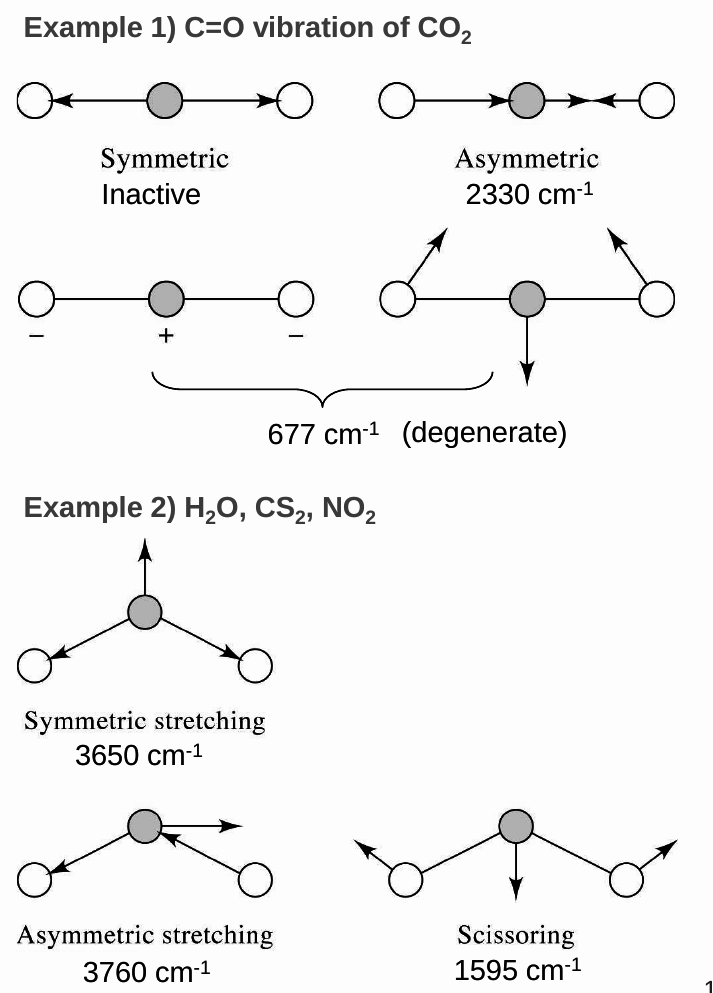
CO₂: 대칭 신축은 IR 불활성, 비대칭 신축 2330 cm⁻¹, 굽힘 677 cm⁻¹(겹침 2개). H₂O: 대칭 신축 3650, 비대칭 3760, 가위 1595 cm⁻¹.[보충] 짝지음 때문에 CO₂의 C=O 신축은 독립된 C=O(약 1700 cm⁻¹) 하나가 아니라 대칭(1340, Raman 활성)과 비대칭(2330~2350) 두 진동으로 갈라진다. CO₂ 비대칭 신축은 이 장(p.13)에 2330, 5장(p.10)에 2350 cm⁻¹로 적혀 있다.
중·원적외에서 FT 분광기의 장점은 속도, 신뢰성, 신호대잡음비, 편리함이다.
P(δ) 간섭도(interferogram, 시간·거리 영역), B(ν̄) 스펙트럼(진동수 영역). 앞 식이 Fourier 변환, 뒤 식이 역변환이다. 컴퓨터가 간섭도를 스펙트럼으로 바꾼다.
δ 지연(retardation). 거울을 더 멀리 움직일수록(δ가 클수록) 분해능이 좋아진다.
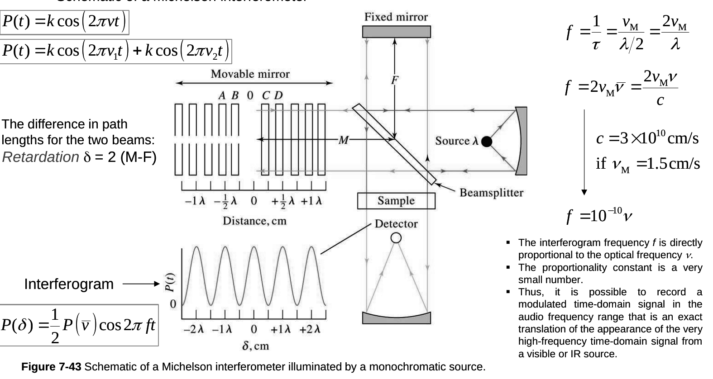
Fig 7-43 Michelson 간섭계. 빔 분할기가 빛을 고정 거울(F)과 움직이는 거울(M)로 나눈다. 돌아온 두 빔이 다시 합쳐져 간섭한다. 지연 δ = 2(M − F). δ가 λ의 정수배면 보강, 반정수배면 상쇄 간섭이다.f 간섭도 진동수, vM 거울 속도. vM = 1.5 cm/s면 f = 10⁻¹⁰ν다. 간섭도 진동수는 빛의 진동수에 비례하고 비례상수가 매우 작다. 그래서 너무 빨라 직접 잴 수 없는 IR·가시광 신호를 같은 모양의 가청 주파수 신호로 바꿔 기록할 수 있다.
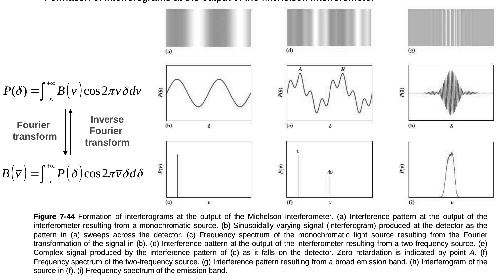
Fig 7-44 단색광(a~c)은 사인파 간섭도, 두 파장(d~f)은 맥놀이, 넓은 띠(g~i)는 δ = 0(중심 폭발, centerburst)에서 크고 양쪽으로 빠르게 줄어드는 간섭도를 만든다.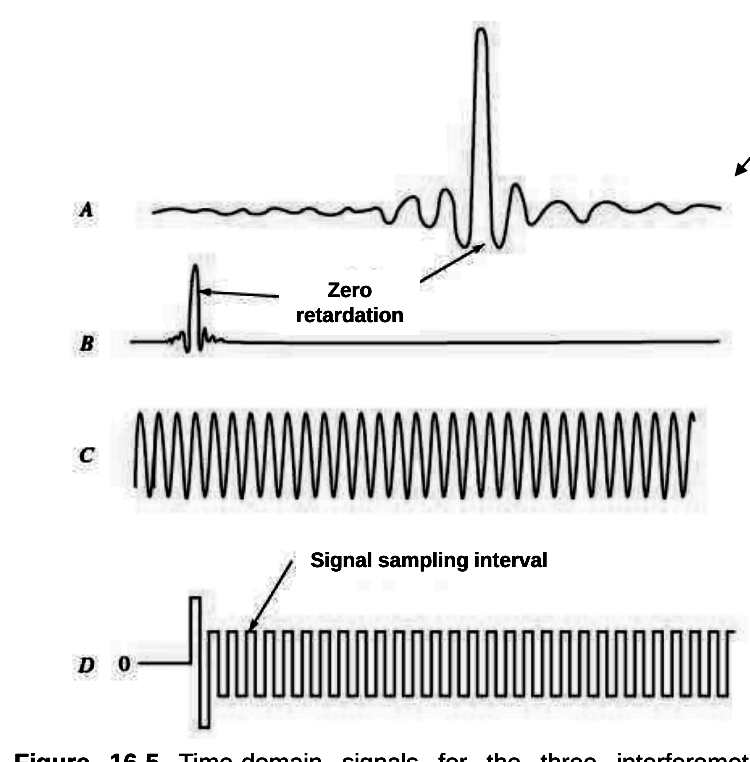
Fig 16-5 A IR 신호, B 백색광 신호(지연 0 표시), C 레이저 무늬 기준 신호, D 레이저에서 만든 사각파(표본 추출 간격).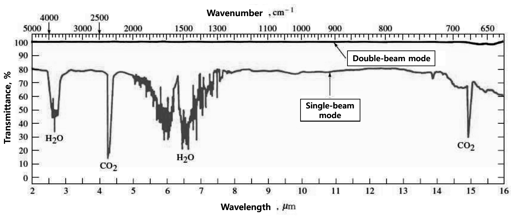
Fig 16-10 단일 빔 모드에서는 대기 H₂O, CO₂ 흡수가 보이지만 이중 빔 모드에서는 상쇄된다.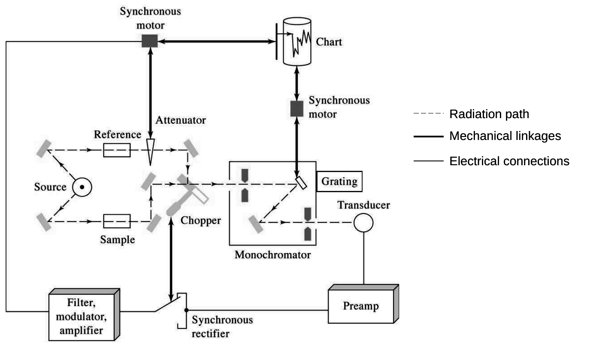
Fig 16-11 이중 빔 분산형 IR: 초퍼가 기준·시료 빔을 번갈아 보내고, 감쇠기(attenuator)가 기준 빔을 줄여 두 빔이 같아지게(광학 영점) 한다. 감쇠기 위치가 투과도다.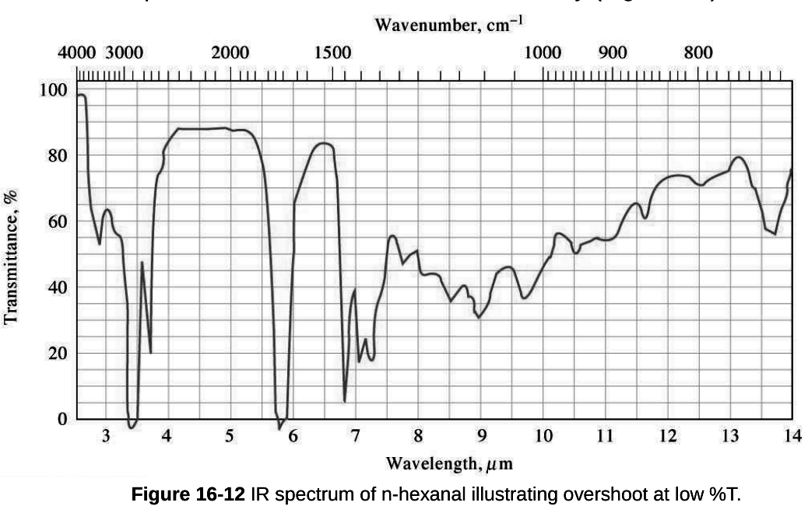
Fig 16-12 n-헥산알 스펙트럼의 낮은 %T에서 생긴 overshoot.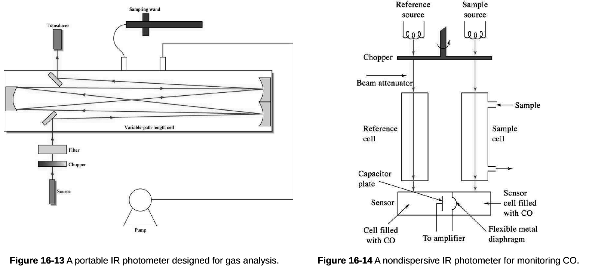
Fig 16-13 휴대용 필터 광도계(가변 광로 기체 셀). Fig 16-14 필터 없는 CO 감시 광도계: 기준·시료 셀을 지난 빛을 CO가 채워진 감지 셀이 흡수하고, 두 셀의 온도·압력 차이를 금속 격막 축전기로 잰다. Fig 16-15 CO₂용 필터 상관 분석기(N₂/CO₂ 기체 필터 바퀴).광원은 전기로 1500~2200 K로 가열한 불활성 고체이며 연속 복사를 낸다.
| 광원 | 특징 |
|---|---|
| Nernst glower | 희토류 산화물 원통(지름 1~3 mm, 길이 2~5 cm). 약 2200 K에서 1~2 μm 근처 최대(Fig 16-16). |
| Globar | 탄화규소(SiC) 막대(길이 5 cm, 지름 5 mm), 1300~1500 K. |
| 백열 전선 | 니크롬선 나선, 약 1100 K. 세기는 낮지만 수명이 길다. |
| 수은 아크 | 원적외(λ > 50 μm). |
| 텅스텐 램프 | 근적외 4000~12,800 cm⁻¹. |
| CO₂ 레이저 | 900~1100 cm⁻¹ 띠. 대기 오염물 감시, 수용액 속 흡수 화학종 정량. |
| 변환기 | 특징 |
|---|---|
| 초전기 (pyroelectric) | 황산 트라이글리신(DTGS). 응답이 빨라 간섭계의 시간 영역 신호를 따라간다. 중적외 FT-IR 대부분에 쓴다. |
| 광전도 (photoconducting) | PbS, MCT(수은-카드뮴 텔루라이드), InSb 반도체 박막. PbS: 근적외 10,000~333 cm⁻¹에 가장 많이 쓰고 상온 작동. MCT: DTGS보다 빠르고 감도가 높다. 중·원적외용이며 열잡음을 줄이려고 액체 질소(77 K)로 냉각한다. |
| 열 변환기 (thermal) | 옛 분산형 기기에서 가장 짧은 IR 파장을 빼고 모두 검출했다. |
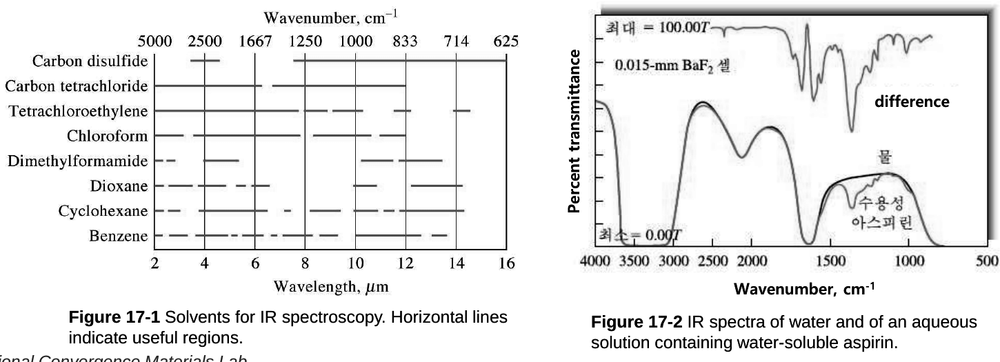
Fig 17-1 IR 용매의 쓸 수 있는 영역(가로선). Fig 17-2 물과 수용성 아스피린 수용액의 IR. 물의 흡수가 커서 차이 스펙트럼으로만 아스피린 띠를 본다.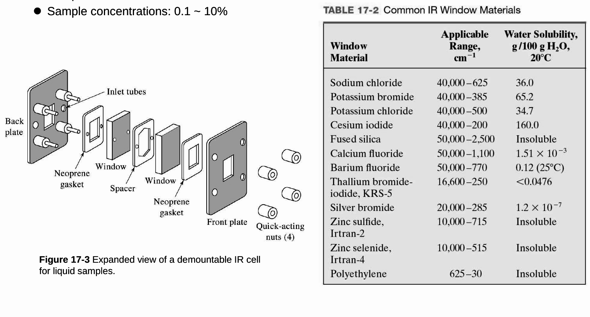
Fig 17-3 분해 가능한 액체 셀. Table 17-2 창 재료: NaCl 40,000~625, KBr 40,000~385, CsI 40,000~200 cm⁻¹. 이들은 물에 잘 녹는다. CaF₂, BaF₂, ZnSe, KRS-5는 물에 거의 안 녹는다.2b = Nλ에서 유도. ΔN 두 파수 사이 무늬 수. 예: ΔN=12, 3230~2080 cm⁻¹이면 b = 0.0052 cm.
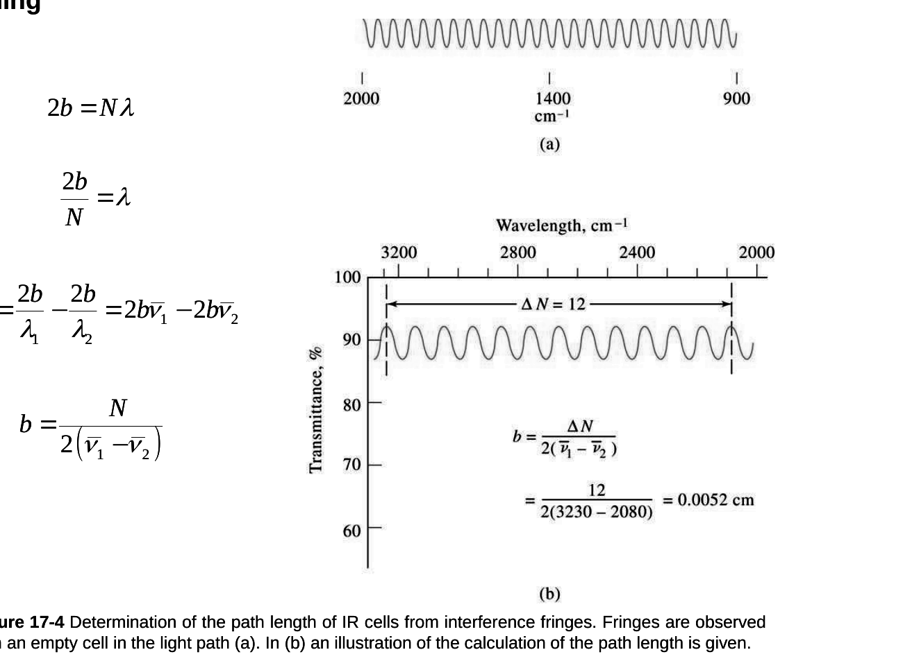
빈 셀에서 두 창 사이 공기층에 반사된 빛이 간섭해 사인파 무늬가 생긴다. 무늬를 세면 광로를 정확히 알 수 있다.
[보충] 작용기 진동은 분자의 나머지 부분과 거의 짝짓지 않아 어느 분자에서나 비슷한 파수에 나온다. 지문 영역은 C−C, C−O, C−N 단일결합 신축과 굽힘이 분자 골격 전체와 강하게 짝지어 분자마다 고유한 무늬를 낸다. 비슷한 구조도 여기서 구별된다.
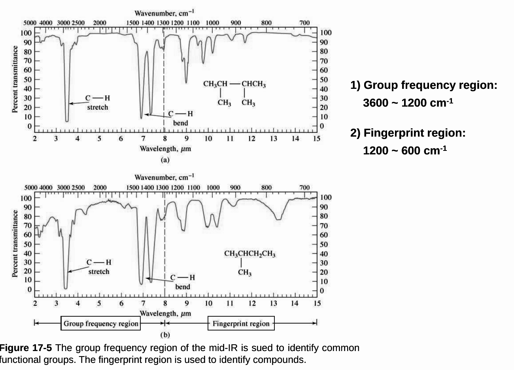
Fig 17-5 탄화수소·알코올·할로젠화물의 스펙트럼. 왼쪽에서 C−H, O−H 신축, 가운데 C−H 굽힘, 오른쪽 C−Cl 신축.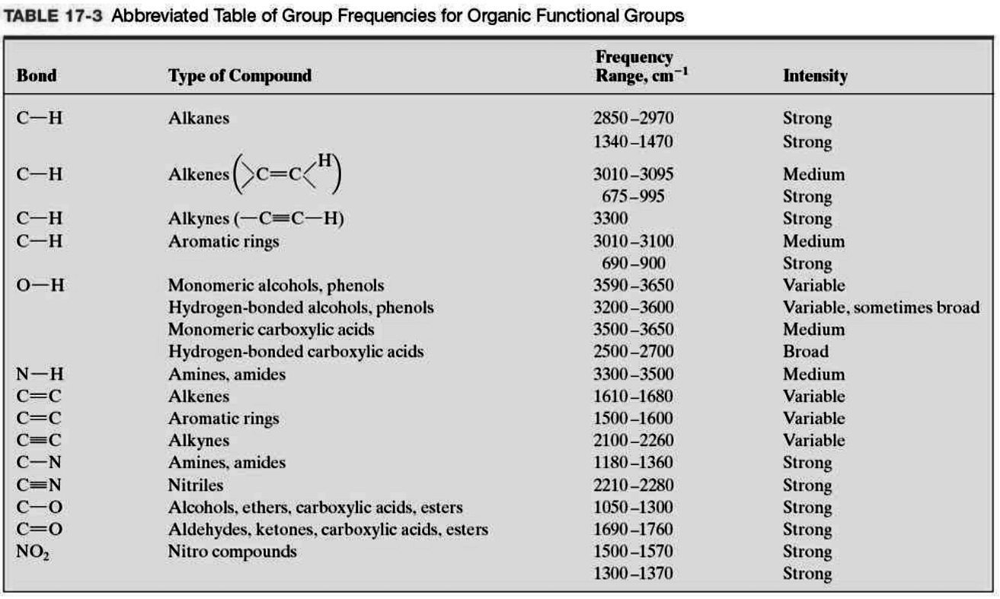
Table 17-3 작용기 진동수. C−H 알케인 2850~2970, 알켄 3010~3095, 알카인 3300, O−H 3590~3650(수소결합 3200~3600 넓음, 카복실산 2500~2700), N−H 3300~3500, C=C 1610~1680, C≡C 2100~2260, C−N 1180~1360, C≡N 2210~2280, C−O 1050~1300, C=O 1690~1760, NO₂ 1500~1570·1300~1370.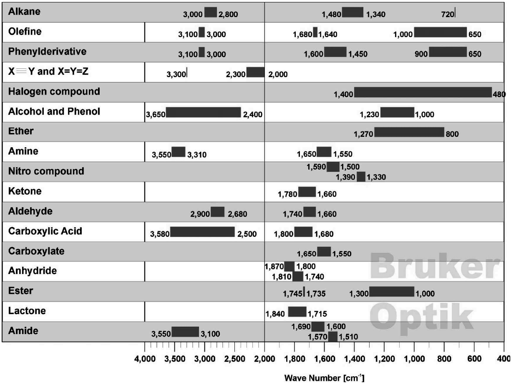
p.41 작용기별 흡수 영역 도표(Bruker). Fig 17-6 상관 도표(correlation chart)는 원본 p.42~43 참조.기준선법(baseline method): 봉우리 양쪽 어깨를 잇는 직선을 기준선으로 긋는다. 봉우리 위치에서 기준선의 %T가 T₀, 봉우리 바닥이 Ts다.
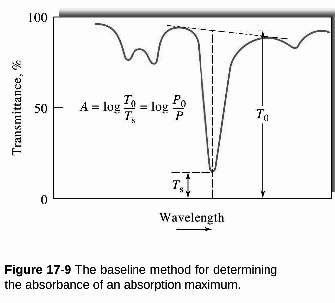
Fig 17-9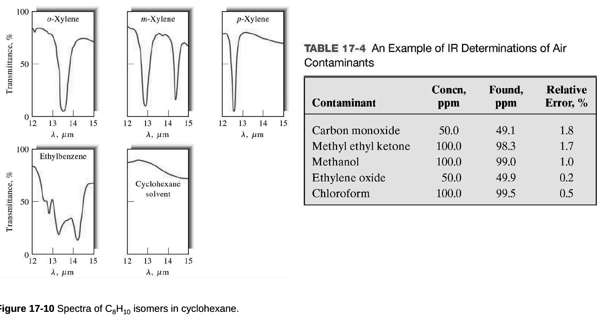
Fig 17-10 사이클로헥세인 속 C₈H₁₀ 이성질체(o-, m-, p-자일렌, 에틸벤젠)는 12~15 μm에서 서로 다른 띠로 구별해 정량한다. Table 17-4 공기 오염물 정량 예(상대오차 0.2~1.8%).고분자 필름·섬유, 식품, 고무, 농산물처럼 다루기 어려운 고체 시료에 쓴다. 반사에는 정반사(specular), 확산 반사(diffuse), 내부 반사(internal), 감쇠 전반사(ATR)가 있다.
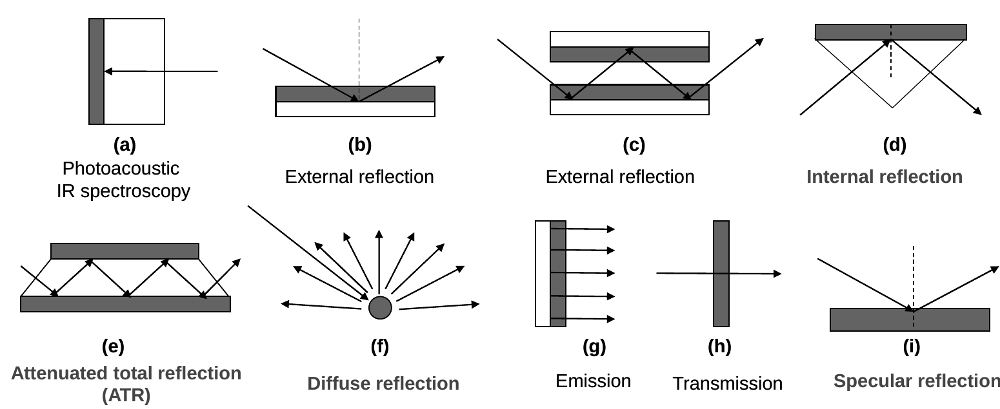
p.49 (a) 광음향 (b·c) 외부 반사 (d) 내부 반사 (e) ATR (f) 확산 반사 (g) 방출 (h) 투과 (i) 정반사.Kubelka-Munk 식. R′∞ 시료와 비흡수 표준(곱게 간 KCl)의 반사 세기 비, k 몰흡수계수(농도에 비례), s 산란계수. f(R′∞)가 농도에 비례해 정량에 쓴다.
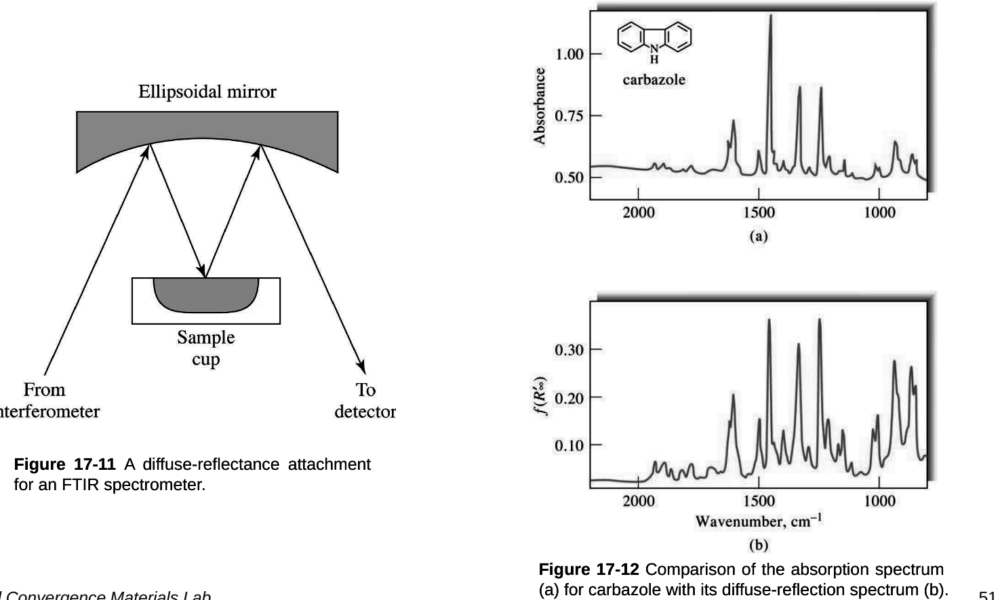
Fig 17-11 타원 거울로 확산 반사광을 모으는 장치. Fig 17-12 카바졸의 흡수 스펙트럼(a)과 확산 반사 스펙트럼(b)은 거의 같다.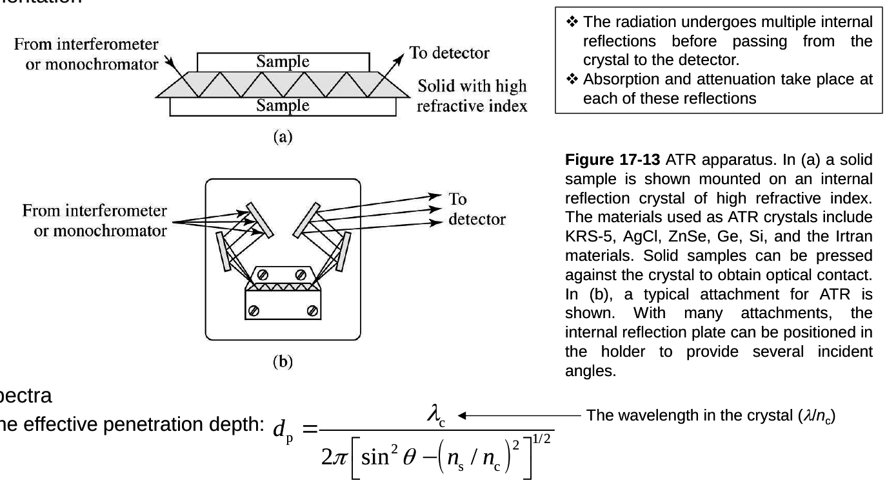
Fig 17-13 (a) 고굴절 결정 위아래의 시료 (b) 입사각을 바꿀 수 있는 ATR 부착 장치.dp 유효 침투 깊이, λc 결정 속 파장(λ/nc), θ 입사각, ns 시료 굴절률, nc 결정 굴절률. 전반사가 일어나려면 nc > ns이고 θ가 임계각보다 커야 한다.
[보충] 침투 깊이는 파장에 비례하고 수 μm 정도다. 그래서 ATR은 표면 근처만 보고, 장파장(낮은 파수) 띠가 투과 스펙트럼보다 상대적으로 세게 나온다. θ를 키우거나 nc가 큰 결정(Ge)을 쓰면 더 얕은 곳을 본다.
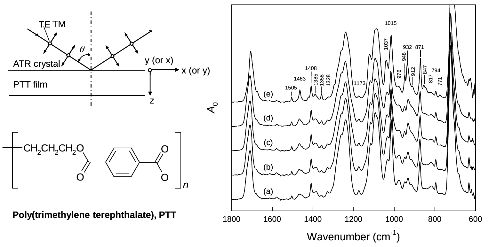
p.53 PTT(폴리트라이메틸렌 테레프탈레이트) 필름의 편광 ATR 스펙트럼(TE, TM). 편광 방향에 따른 띠 세기 차이로 사슬 배향을 분석한다.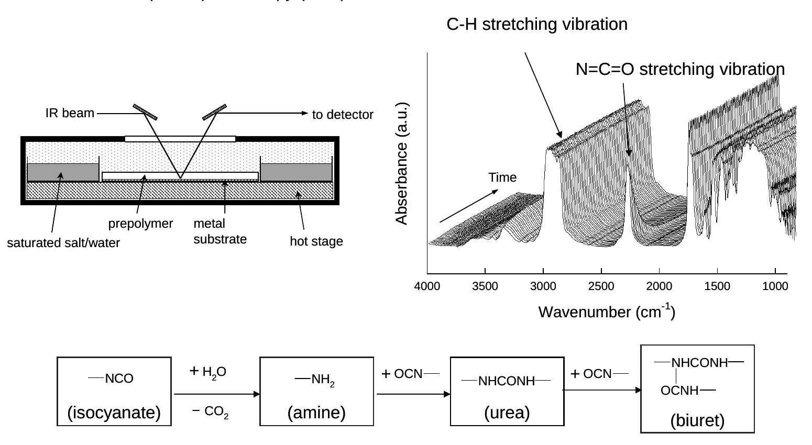
p.54 금속 기판 위 프리폴리머를 가열하며 시간에 따라 IR을 잰다. N=C=O 신축 띠(약 2270 cm⁻¹)가 시간이 갈수록 줄어든다. 아래 반응식: 이소시아네이트 → 아민 → 우레아 → 뷰렛.[보충] 폴리우레탄(PU) 기본 반응: R−N=C=O + HO−R′ → R−NH−CO−O−R′(우레탄 결합). 다이아이소시아네이트(예: MDI)와 다이올(예: PPG, 폴리올)이 반복해서 반응해 사슬이 자란다. IR로 반응을 추적할 때는 N=C=O 띠(약 2270 cm⁻¹)가 사라지고, 우레탄·우레아의 N−H 신축(약 3300 cm⁻¹), C=O 신축(우레탄 약 1700~1730, 우레아 약 1640~1660 cm⁻¹), N−H 굽힘+C−N 신축(아마이드 II, 약 1530 cm⁻¹)이 커지는 것을 본다.
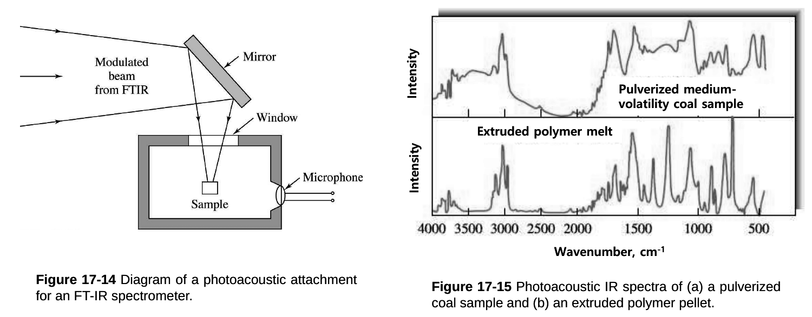
Fig 17-14 FT-IR용 광음향 부착 장치(시료, 창, 마이크). Fig 17-15 가루 석탄과 압출 고분자 펠렛의 광음향 스펙트럼.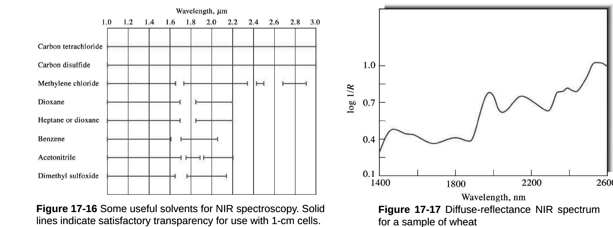
Fig 17-16 NIR 용매(1 cm 셀에서 투명한 범위). Fig 17-17 밀 시료의 확산 반사 NIR 스펙트럼(log 1/R).| 구별 기준 | A | B |
|---|---|---|
| 파수 영향 | k 클수록: 높음(C≡C 2150) | μ 클수록: 낮음(C−Cl 800) |
| 진동 수 | 선형: 3N−5 | 비선형: 3N−6 |
| 띠 증가 | 배음: 기본의 2·3배 | 결합음: 두 기본의 합·차 |
| 영역 | 작용기: 3600~1200, 작용기 확인 | 지문: 1200~600, 화합물 확인 |
| 파장 분리 | 분산형: 회절발, 슬릿 | FT: 간섭계, 슬릿 없음, 동시 측정 |
| FT 이점 | Jacquinot: 처리량 | Fellgett: 다중화(동시) |
| 간섭계 기준 | He-Ne 레이저: 표본 간격 | 백색광: 지연 0 지점 |
| 검출기 | DTGS: 상온, 빠름 | MCT: 77 K 냉각, 더 빠르고 민감 |
| 반사 | DRIFTS: 가루, Kubelka-Munk | ATR: 고굴절 결정, 표면 수 μm |
| NIR vs FIR | NIR: C−H, N−H, O−H 배음 | FIR: 금속-리간드, <650 cm⁻¹ |
| 고체 시료 | KBr 펠렛: 압축 원판 | 멀: Nujol 반죽 |